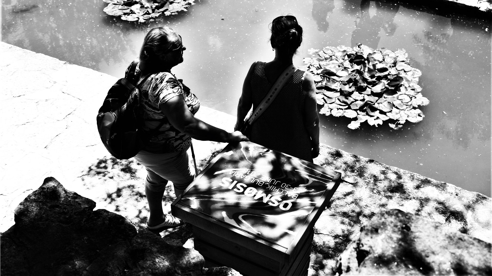
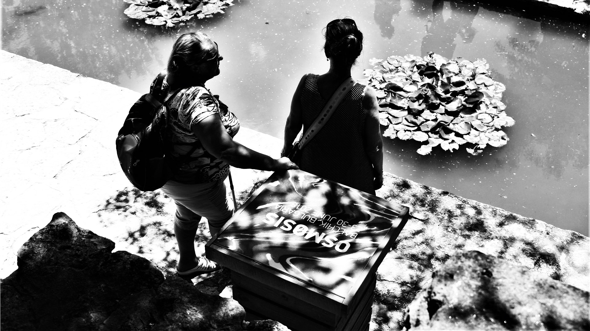
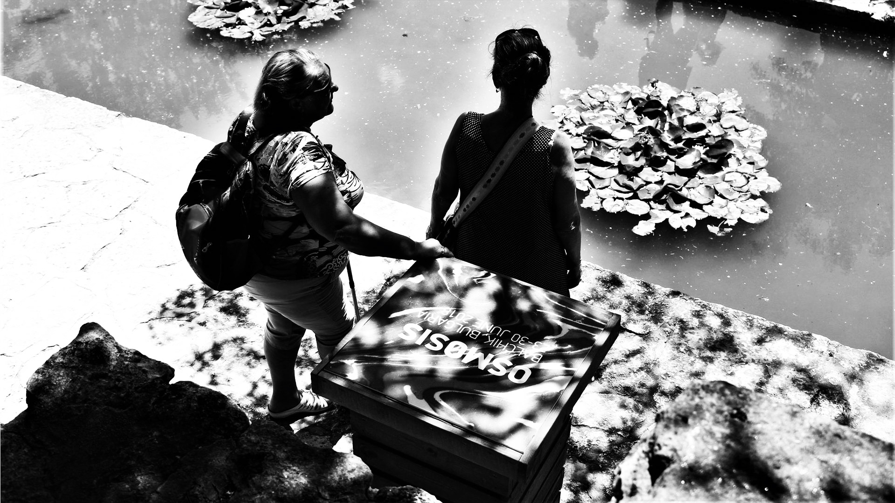

Para este proyecto me contactaron desde IN THE PALACE -un festival internacional seleccionado por los Oscars®-, para gestionar su identidad visual, producción de eventos y dirección de equipos.
El proyecto incluye más de 40 video-entrevistas y 80 entrevistas en texto, en diferentes idiomas, pero también la dirección y liderazgo de cuatro equipos de profesionales multidisciplinares.
En este proyecto aprendí la importancia de la estructura, y diferentes maneras de gestionar las crisis, pero también la importancia de mantener la calma, y respetar la claridad y sinceridad en situaciones de estrés.
